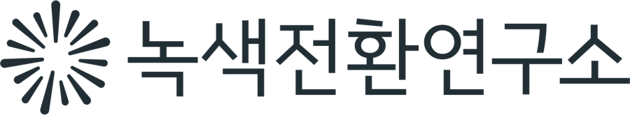
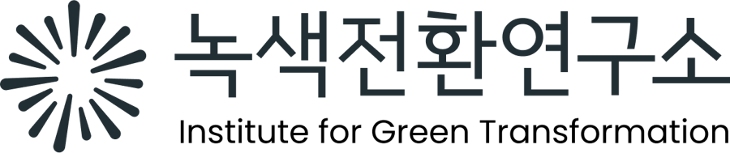
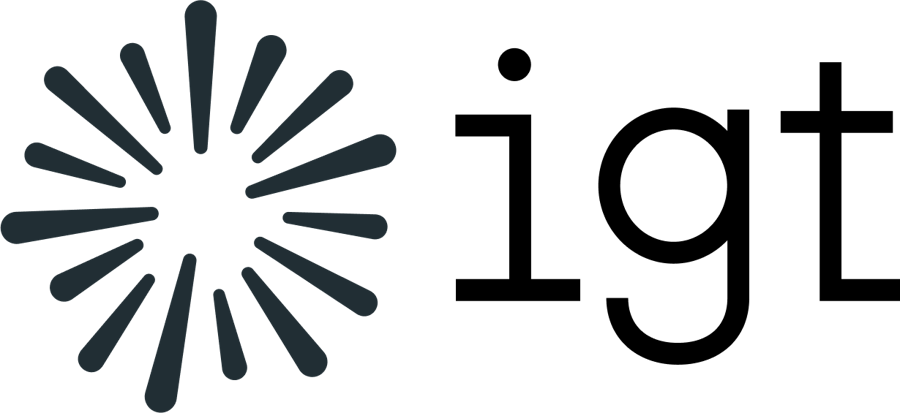
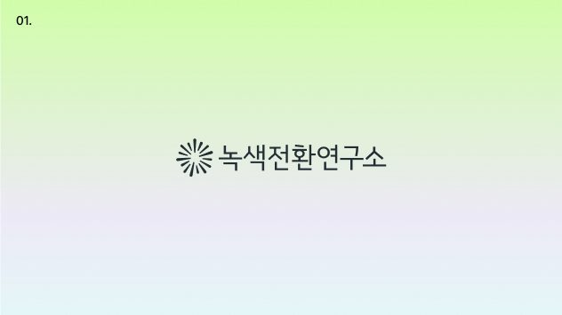

01
Symbol A · 선의 리듬
시그니처 로고 시안 01
여러 선이 모여 전환의 통로를 여는 심볼
여러 선이 모여 만드는 움직임과 리듬으로, 현실에서 더 나은 미래로 나아가는 통로를 형상화했습니다. 서로 다른 주체들의 힘이 모여 전환의 가능성을 열어가는 모습을 담았습니다.
형태길이와 굵기가 다른 선들이 방사형으로 모이고, 가운데를 비워 ‘통로’를 만듭니다. 영문 ‘igt’는 끝에 세리프가 있는 서체입니다.
인상짙은 청록빛 회색을 써서 차분하고 정돈된 인상입니다. 절제된 연구기관의 느낌에 가깝습니다.
함께 볼 점시안 04와 심볼이 같고 워드마크와 색만 다르므로, 두 시안을 나란히 비교해 주세요.
로고타입 구성



적용 예시
